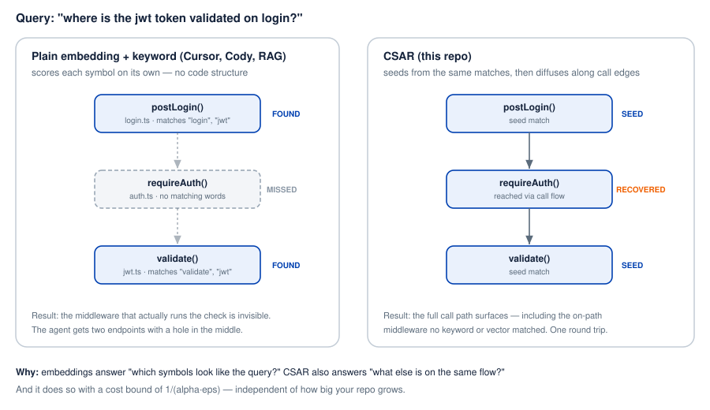
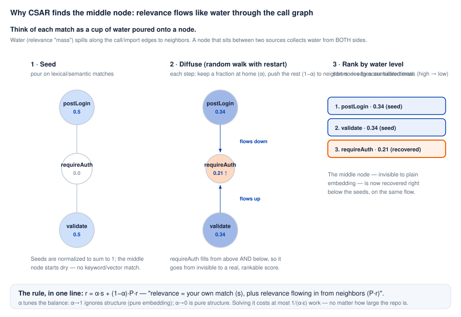
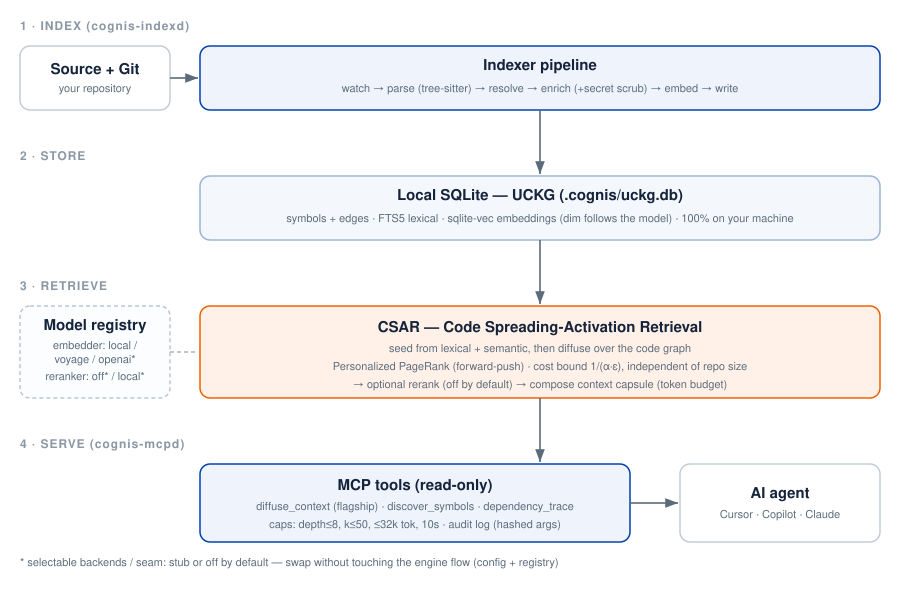

Cognis indexes your repository locally and serves precise retrieval to any
MCP-compatible coding agent. Its CSAR engine starts from ordinary lexical and
semantic matches, then diffuses relevance along calls and
imports edges — recovering the on-path code that embedding and
keyword search leave out.
Everything here is open source. You can build and run all of Cognis from source for free. The paid build is not a different product — it's the same engine with no extra features, just packaged ahead of time so it installs and sets up once, then runs. Buying it directly funds the continued development and research behind Cognis.
Ask an agent "where is the JWT token validated on login?" Embedding and BM25 score every symbol on its own. They find the two ends that mention "login" and "validate" — but the middleware that actually runs the check matches no query words, so it never surfaces. The agent gets a flow with a gap and guesses.

Code Spreading-Activation Retrieval treats relevance like water poured onto the matched nodes and let it flow along the call graph. A node between two matches collects mass from both sides, so it ranks high even with zero direct match. The whole model is one equation.
calls / imports edges.Pour relevance onto the same lexical and semantic matches a normal index already produces.
Each step keeps a fraction α at home and pushes (1−α) to neighbors. The middle node fills from both sides.
Sort by accumulated mass. The on-path node rises next to the seeds, recovered in a single round trip.

Four stages run entirely on your machine: an incremental indexer, a local SQLite knowledge graph (UCKG), the CSAR retriever, and a read-only MCP server. Embedders and rerankers are swappable behind a registry without touching the engine.

One retrieval backend across every agent. All tools are bounded (depth ≤ 8, k ≤ 50, ≤ 32k tokens, 10s) and write a hashed audit log — never raw arguments.
All five CSAR / Personalized-PageRank theorems are verified in code and property-based tests, including both α endpoints. The cost bound 1/(α·ε) holds regardless of repository size.
Indexing and retrieval run locally; nothing is sent to a server. Secrets are scrubbed during enrichment, MCP tools are read-only, and every call is recorded in a hashed audit log.
Security uses standard SHA-256 hashing only. Offline license verification uses Ed25519 — a vetted standard, never a home-rolled cipher.
Depth, result count, token budget, and wall-clock are all capped per call, so an agent cannot make the engine run away on a large monorepo.
| Dimension | Rating | Basis |
|---|---|---|
| Retrieval quality | 8 / 10 | recovers on-path flow; reuses cheap seed signals |
| Mathematical rigor | 9 / 10 | 5 PPR theorems, verified in code & property tests |
| Security posture | 8 / 10 | secret scrubbing, read-only tools, hard caps, hashed audit log |
| Scope / maturity | 7 / 10 | 5 languages (TS/JS, Python, Go, C#, Java); local-first |
Everything in Cognis is open source — you can build the whole thing from source for free. The paid build is the same engine, packaged ahead of time so it installs and sets up once, then runs immediately. No code is held back — buying the build is how you support the ongoing development and research. Polar is the merchant of record and handles tax and VAT.
Secure checkout via Polar · one-time charge. A v0.7 license unlocks every 0.7.x patch.